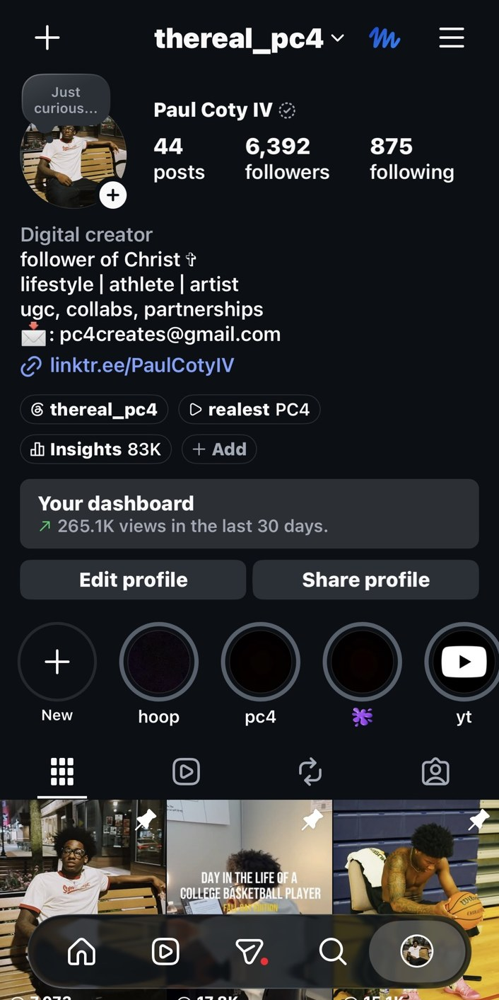
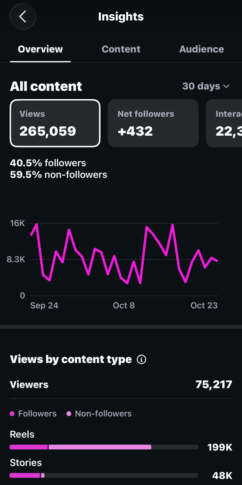
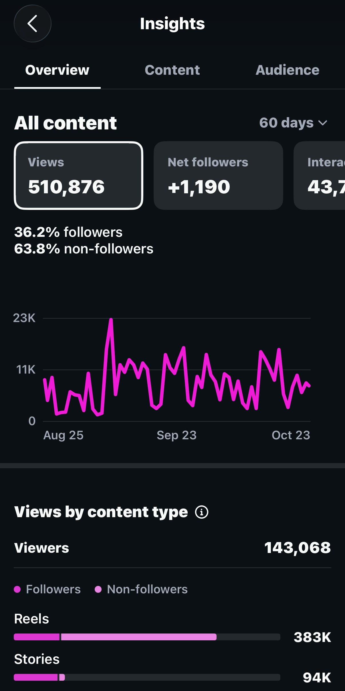
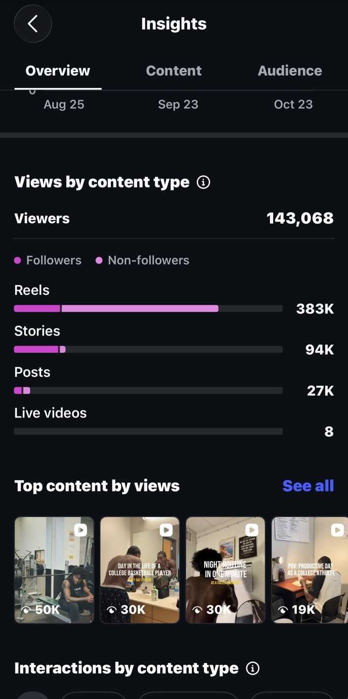
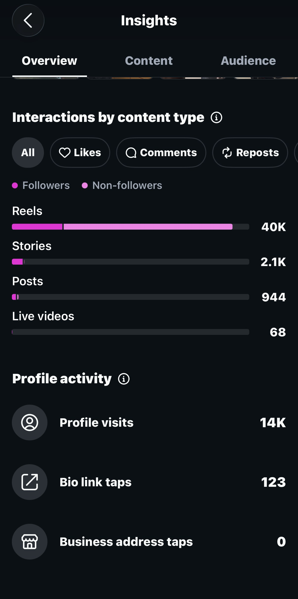
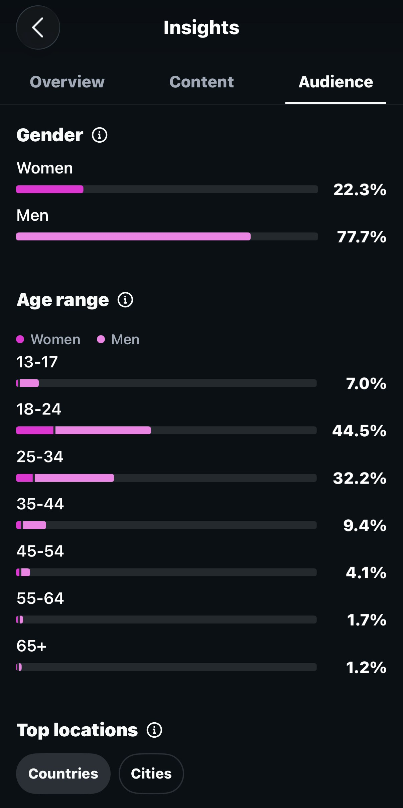
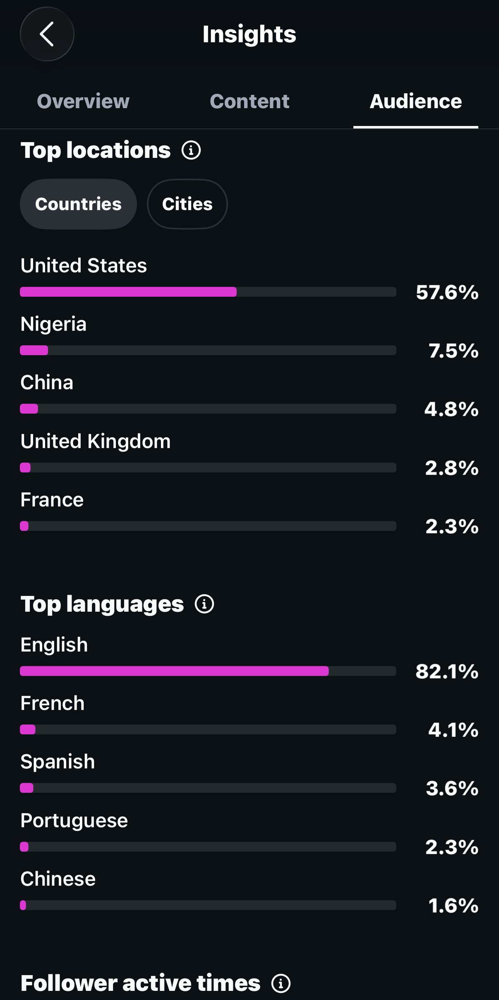

BRAND COLLABORATION 01 / 04
VENMO↗
SOCIAL-FIRST STORYTELLING
Venmo & brand storytelling
Creative concepts and short-form branded videos integrating products into authentic everyday narratives.
PAUL COTY IV
New York–based content creator, filmmaker and social media strategist building meaningful stories and measurable digital impact.
↘THE PERSON BEHIND THE WORK
I blend filmmaking, social media management, content strategy and creative direction to turn ideas into stories that connect with audiences—and support real brand goals.
More about me ↗01 / SELECTED WORK
A collection of collaborations, original content and professional productions.
Creative concepts and short-form branded videos integrating products into authentic everyday narratives.
Developed relatable, social-first branded concepts built around daily routines and real-life use cases. The creative approach focused on authentic storytelling, clear product integration, and short-form pacing that feels native to Instagram and TikTok.
Selected campaign footage can be added here once a shareable approved version is available.
FROM 800 FOLLOWERS TO 6.3K+
Through consistent storytelling, creative experimentation, audience insights and a self-developed content strategy.
Grew an Instagram community from roughly 800 followers before taking content creation seriously to more than 6,300—through consistent posting, studying audience behavior, refining creative formats, and applying an intentional social media strategy.
Led daily filming, editing and visual storytelling for a five-week summer camp. Four selected recap videos featured below.
Selected brand campaigns, UGC and creative partnerships spanning lifestyle, technology, sports, wellness and consumer products.
Press play on any film to watch. Videos are optimized for web playback.
02 / MEASURABLE IMPACT
Instagram account insights, as shown in screenshots provided October 2026. Metrics are historical snapshots, not live totals.
Reaching beyond the existing audience: 63.8% of views came from non-followers over the 60-day period. Instagram insights also show approximately 40K Reel interactions and 14K profile visits during that window.
Original Instagram analytics screenshots — tap any image to view the full screenshot.

Instagram profile and follower count ↗
30-day views and growth ↗
60-day views and growth ↗
Views by content type and top reels ↗
Interactions and profile activity ↗
Audience demographics ↗
Audience locations and languages ↗PROFESSIONAL VIDEOGRAPHY / STAR LAKE
Selected daily recaps filmed and edited during my summer media production internship.
Press play on any film to watch. Videos are optimized for web playback.
PERSONAL WORK / ORIGINAL FILMS
Independent cinematic experiments exploring atmosphere, movement, and everyday storytelling.
A winter visual study moving from quiet snow-covered scenes into the energy of the city after dark.
ORIGINAL CINEMATIC SHORT / 00:26A warm, cinematic portrait of the waterfront, city skyline, and everyday moments.
ORIGINAL CINEMATIC SHORT / 00:29Press play on any film to watch. Videos are optimized for web playback.
02 / ABOUT ME
I'm Paul Coty IV, a New York–based Film & Media student, content creator, filmmaker and aspiring social media strategist. I combine creative storytelling with social media management, audience research, content planning and hands-on production.
After growing my own audience through consistent experimentation, I learned how to turn creative ideas into repeatable strategies. I bring that same approach to brand partnerships and organizations—from planning content calendars and shaping a brand voice to shooting, editing and analyzing results.
03 / EXPERIENCE
Professional media work across organizations, campaigns and independent creative projects.
Content Manager Intern
Digital Media & Social Media Production Intern
Digital Media & Content Production Intern
Brand collaborations & original short-form content
04 / CONTACT
Open to internship and job opportunities, social media management, creative strategy, video production, and brand collaborations.
Start a conversation ↗Hiring for an internship or full-time role? Planning a campaign or looking for a creative partner? I’d love to hear from you.